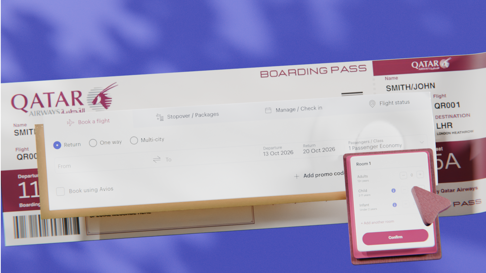
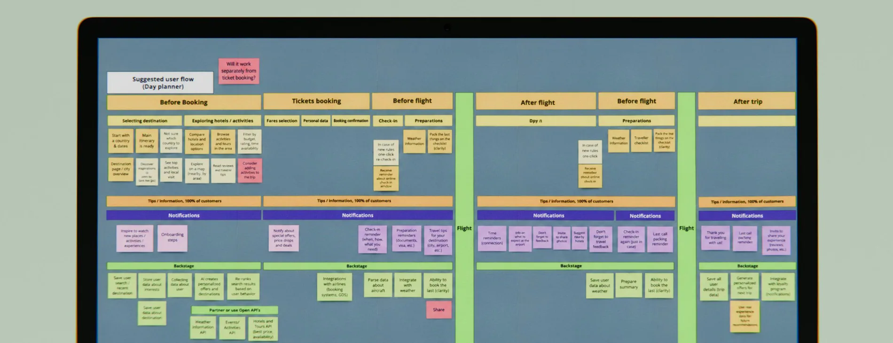
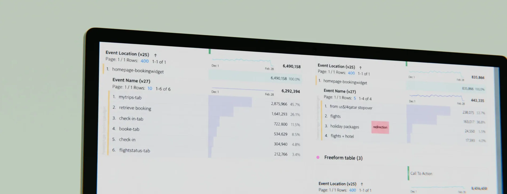
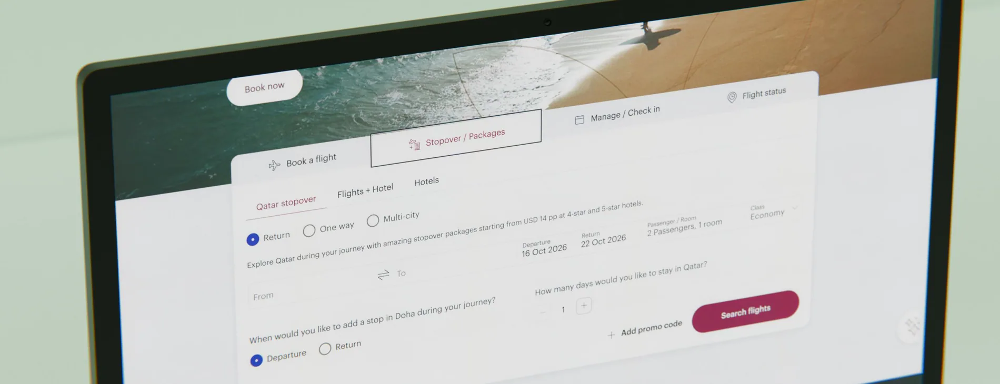
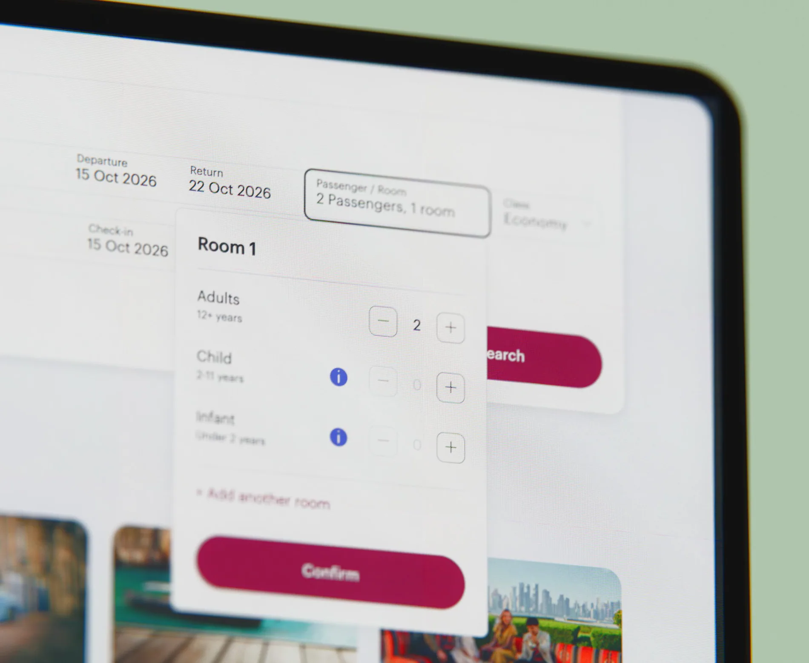
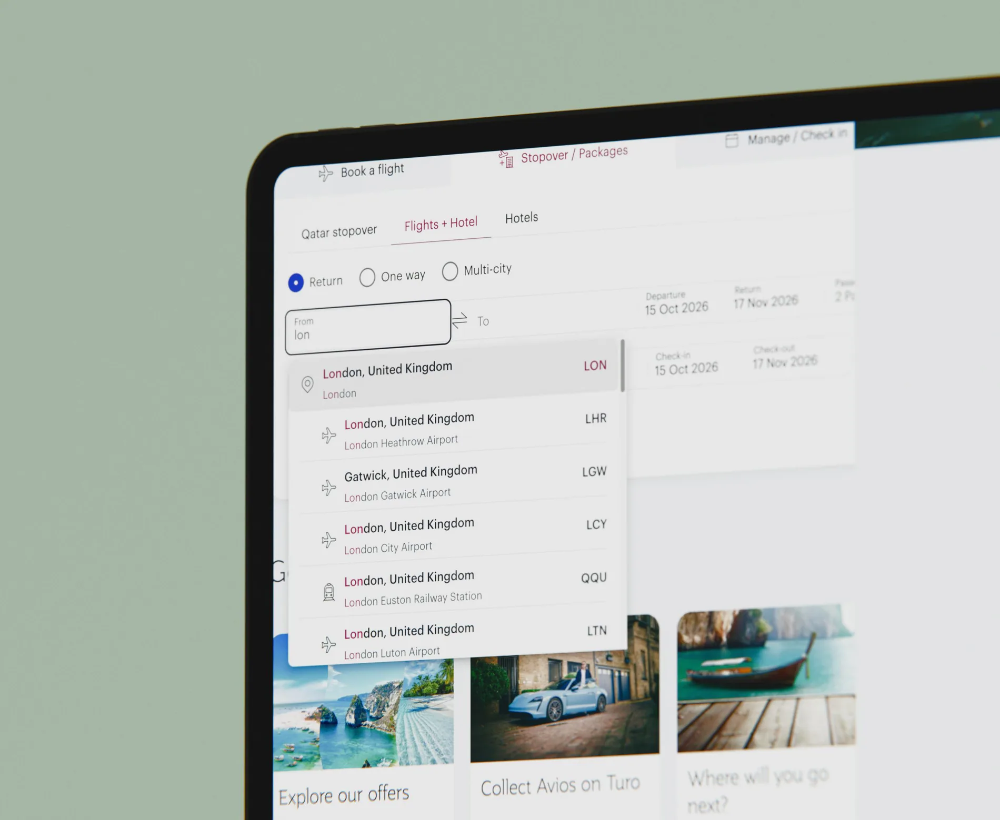
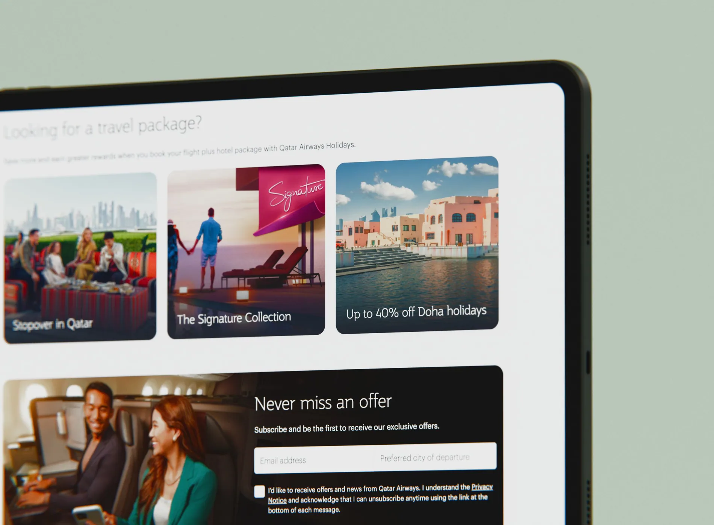

Qatar Airways
Better journeys start before booking.
SCROLL TO EXPLORE
The best route through a complex travel website should feel like the obvious one.
Connecting discovery, planning and booking across a complex travel ecosystem—grounded in research, content hierarchy and practical delivery.
- Project
- Qatar Airways
- Role / disciplines
- Experience design / Research
- Period
- 2021 — 2022
Many journeys. One experience.
The Explore POD addressed the homepage, destinations, Privilege Club and widgets for booking, COVID information and miles.

The problem was not a single isolated screen. It was how travelers moved between discovery, planning and action while navigating different content priorities and services.€
Research before layout.
I examined competitor strategies for engagement, loyalty, cross-selling and content discoverability.

The work looked at user flows, storytelling, content structure, page speed and ways to manage bonus miles. Those findings informed hypotheses that could be challenged with the team before design work hardened into implementation.
Let users shape the booking structure.
Card sorting made it possible to check which tabs mattered and how travelers understood their labels.

We used the exercise to revisit naming, ordering and grouping in the booking widget. I also identified user scenarios and entry points that made it easier to find relevant actions.€
Better navigation comes from tested priorities, not assumptions.
Bring feasibility into the room early.
A promising direction needed feedback from users and practical review with engineering.


I worked with a Business Analyst and development team in workshops to assess feasibility and led usability testing to refine designs. I collaborated with content partners and documented component changes for consistency.

Better journeys start before booking.
User research, clearer content hierarchy and reusable patterns to rethink key moments across a major airline website.
* Figures reflect the period of work shown in the portfolio and may differ from the current situation.